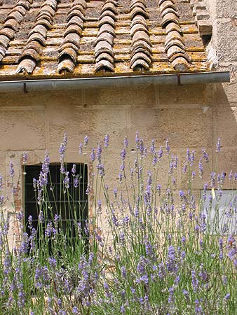

| 
The path to the front door was flanked by lavendar.
The smell was intoxicating. In addition, we had a giant rosemary
bush, various wild mints, laurel, and many other fragrant
flowering trees and bushes. I wish there were a technology
for recording scents... it was one of my favorite things about
the place.
|